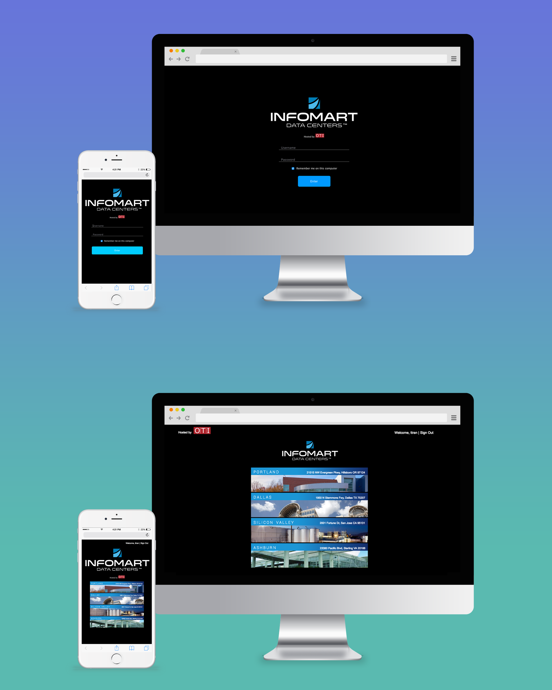
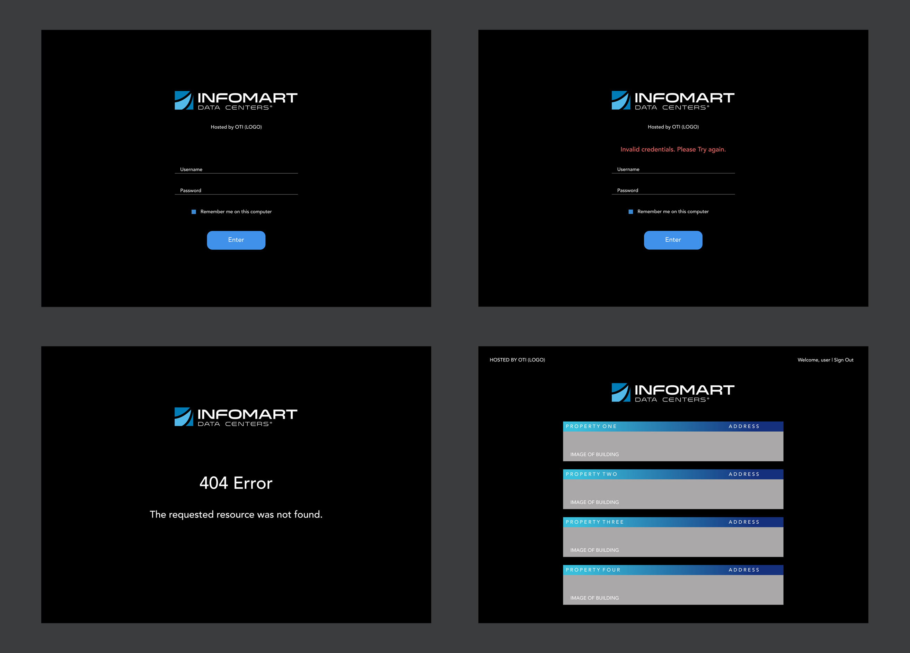

POSITION
WEB/MOBILE DESIGNER & DEVELOPER
TOOLS & SKILLS USED
SKETCH - PHOTOSHOP - DGLUX5
OBJECTIVE
Controlco has helped Infomart integrate several of their system backbones and provided an interface for their operations. Unfortunately, the overall layout of the website that Controlco provided a few years back no longer looked up to date with modern day aesthetics. The VP decided it was time to rejuvenate our products and install new designs. As a result, I was then given the assignment to breathe life into the website, starting with re-designing the login page and portal screen.

APPROACH
The login page is the first Controlco project in which I built something using HTML/CSS and JS. A requirement was that these pages had to be fully responsive because many of the engineers tend to check the site through their phones.
Once the user successfully logs in with their credentials, they will be taken to the portal screen where they can choose which property to access. I built the page so that way users with administrative privileges will see all four sites, while other users can only view the properties they have privileges to.

For the appearance of these pages, I used blue because it was the predominant color on the rest of the website already. I got a little more creative with the portal page, using images of the properties as links to their websites. These links are vertically arranged and if you hover over one site, the other images will dim. If your cursor is not on any of the sites, then they all will remain 100% opaque. Although a simple feature, I felt that this added a bit more user engagement. Plus, it was another visual cue to help our users understand what they were doing.
THE CHALLENGE
Coming up with the design for these pages was easy to me, but I can't say the same about making them functional. I had to figure out what logic to implement in order to allow users to see the appropriate sites. For example, a user who has access to only one site will be redirected straight to that site without even seeing the property selection screen. After figuring out the proper coding and logic, I tested the pages out with my own user credentials, changing my permissions to every possible scenario to insure no mistakes were made.

ONE STEP AT A TIME
This design was engaging to work with—I was able to incorporate more creative components into this project because I wasn't required to show heavy data. After the pages went live, the integrators, modelers and fellow UI team praised my overall design. Before my onboarding into the company, all of the applications were built with a primary focus on functionality. After seeing what I was able to do with limited directions, Controlco gave me more design opportunities and together, we began focusing on making better looking products for our customers.